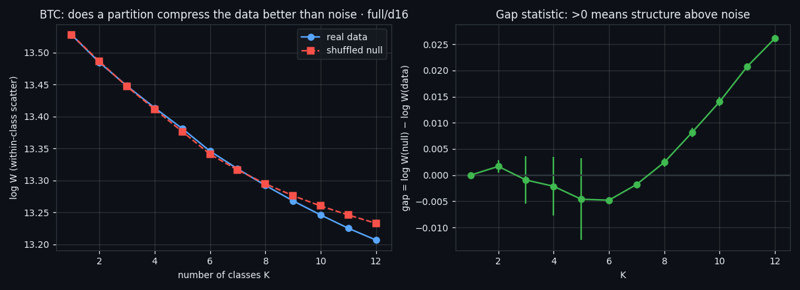
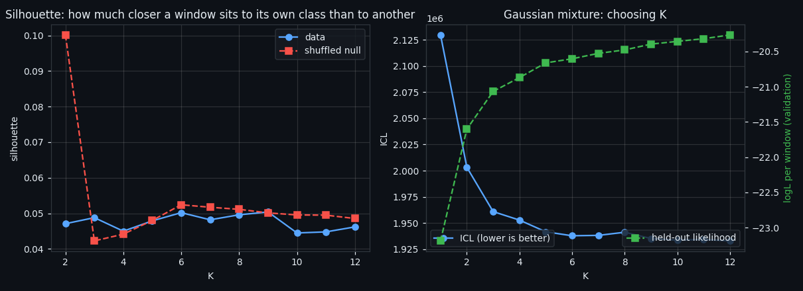
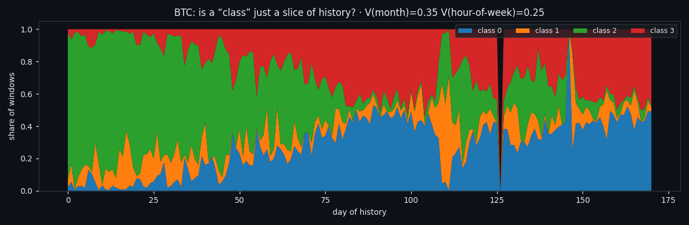
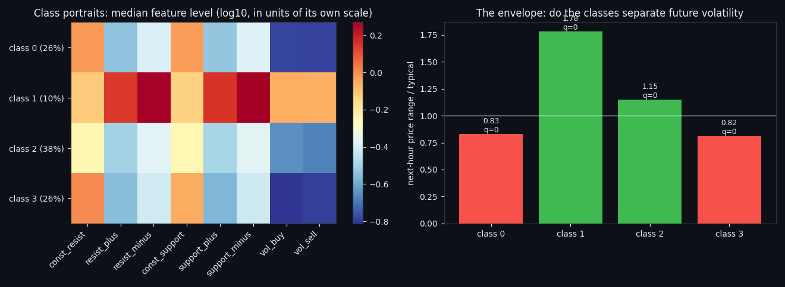

There Are No Classes in the Order Book — Only One State That Survives
We locked a 210-second window to its own 1,680 numbers — eight order-book features, no norm, no price, no clock — and asked whether the market falls into classes. It does not: the gap statistic sits at 0.0017, silhouette matches noise, and at some K the shuffled null is more stable than the data. One state survives every check: 9.8% of windows where flows run hot and both walls thin out, followed by ×1.78 the usual hourly range.
Full walkthrough — streamed from YouTube.
① One window, 1,680 numbers, nothing else
The constraint came first and everything follows from it: a 210-second window may be classified only by its own 1,680 numbers — eight order-book features across 210 seconds. No multi-day normalisation, no price, no time of day, no neighbouring windows. Anything computed from the dataset as a whole is outside information, and we later measured what dropping it costs — nothing at all.
That leaves 54,764 windows cut edge to edge across 171 days. The map on the right is the shuffled null: cells permuted between windows, everything destroyed except the marginals. Note that the null grows its own detached blob — that is how easily a clustering pipeline invents a class.

② Before naming classes, ask whether classes exist
Clustering always returns something, so the first job is to test the premise. Four independent criteria, each with its own null control run through the entire pipeline.
The gap statistic at K=2 comes out at 0.0017 — a partition compresses the data no better than noise does. Silhouette on real data is 0.047 against 0.041 on the null. Silverman's test finds no second mode on any principal axis (smallest p = 0.19), nor along the direction of maximum separation.

③ Two respected criteria that lie here
The bootstrap likelihood-ratio test rejects K=1 with LR = 23,673 against a null distribution of 123. Overwhelming — until you run the same test on shuffled cells, where it rejects K=1 just as confidently with LR = 14,117. It measures non-Gaussian marginals, not clusteredness. ICL behaves the same way: it falls monotonically to the largest K with no interior optimum.
Stability is no safer. Rebuilding the whole pipeline on two disjoint halves of history gives ARI 0.50 at K=2 — and at K=5, 6 the shuffled null is more stable than the real data. A number that noise can beat is not evidence.

④ The structure is real — it just isn't classes
None of this says the data is empty. Sixteen axes capture 83% of the descriptor variance against 62% on the null; on the raw 1,680-number vector it is 30.6% against 1.2%. The structure is simply continuous rather than discrete.
A ladder of nulls locates it. Destroy the joint composition of features while keeping each feature's shape inside the window, and variance collapses from 83% to 63%. Destroy everything else on top of that and you lose only another 1.0 points of variance. What a window is, is what its features are doing together — not the shape they trace through time.
⑤ Without an external norm, you classify the calendar
Here is the trap that costs an entire study if missed. With no multi-day normalisation, the loudest signal in the data is the general activity level, and that drifts from month to month. Cramér's V between class label and month is 0.35; one class holds 63% of the first half of history and a fraction of the second.
So every price statement is measured twice: absolutely, and again against the median of the same day. Three of the four groups collapse from ×0.82…×1.15 to ×0.97…×0.98 — they were labels for a period of history. A distance-based forecast of the next hour's range drops from ρ = 0.593 to ρ = 0.254 under the same correction, while the day's own level alone scores 0.605.

⑥ One state survives everything
What is left is a single genuine state, and it is not subtle: 9.8% of windows in which all six flow features run 1.4–1.9× their own scale while both resting walls sit thinner than normal. The book is coming apart while trade keeps running.
Next-hour range after those windows is ×1.78 the typical, and ×1.40 even against other windows of the same day. On the held-out split alone it reads ×1.83 and ×1.47 — no worse than in training.
This is a rediscovery, not a discovery. The same configuration was already validated in this project by two other routes. This pipeline reached it with no norm, no price and no clock.

⑦ Three comparisons you can run on any window
The state distils into three thresholds on geometric feature levels — no model, no matrices, eight frozen constants and three numbers:
√(resist_minus · support_minus) > 1.417, √(resist_plus · support_plus) > 0.909, √(const_resist · const_support) < 1.234.
On held-out windows the rule fires 9.3% of the time with precision 0.773 and recall 0.662, and the following hour ranges ×2.08. Applied to 40,000 windows at arbitrary offsets — not aligned to any grid — it fires 8.6% of the time with the same ×1.94. Matching coverage on unaligned windows is the proof that this is a state of the market and not an artefact of how we sliced it.
⑧ Teaching a machine to see the same thing
Four targets, input the full 8 × 210 raw matrix, transformed only inside the window. The dataset is cut into ten random parts; each window is scored exactly once by a model that never saw it.
The convolutional network wins on every target and every fold — for the sharp state AUC 0.9968 (PR-AUC 0.9746). But the interesting part is the pattern across targets: against a plain linear model the network's edge is small on the sharp state and large on the blurred middle one. Sharp states live in levels; blurred ones live in shape.
Two engines run in production, a network and gradient boosting. Across the whole dataset they agree on 98% of windows for the sharp state and only ~90% for the blurred ones — an independent confirmation, from a completely different direction, that the boundaries inside the continuum are conventions.
⑨ Reproduce it on your own data
Everything above is a procedure, not a table of results. A class here is never a list of windows — it is defined by its rank in feature-flow level, so the same recipe recomputes it on another coin, another period, a longer history.
The full research diary is attached: step by step how each class was found, which checks confirm or kill it, how the detectors were trained, plus the complete source of every file in the pipeline. Hand it to a machine together with your data and you get the same classes and working models back.
Download the research diary (WCLASS_DIARY.md)
Research, not financial advice. Written with AI assistance.
If this changed how you read the tape, the natural next step is Four Market States, Found Twice by Two Independent Pipelines — Four market states, found twice by two pipelines that share no code.
Four Market States, Found Twice by Two Independent Pipelines
Four market states, found twice by two pipelines that share no code.
Local tops and bottoms in the order book: what four trained models actually see
We marked every local top and bottom on 171 days of per-second Bitcoin order-book data — 734 of them, defined by a rule rather than by hand — and….
Volume Is the Fuel — Not the Steering Wheel
We recorded the Binance order book every second for six coins over five months and ran eighteen tests on what volume really does.
About Market Research Lab — What We Collect and Why
Most market commentary is storytelling.
Comments
Discussion is powered by GitHub. Enable it by adding secrets/giscus.json (repo IDs from giscus.app).